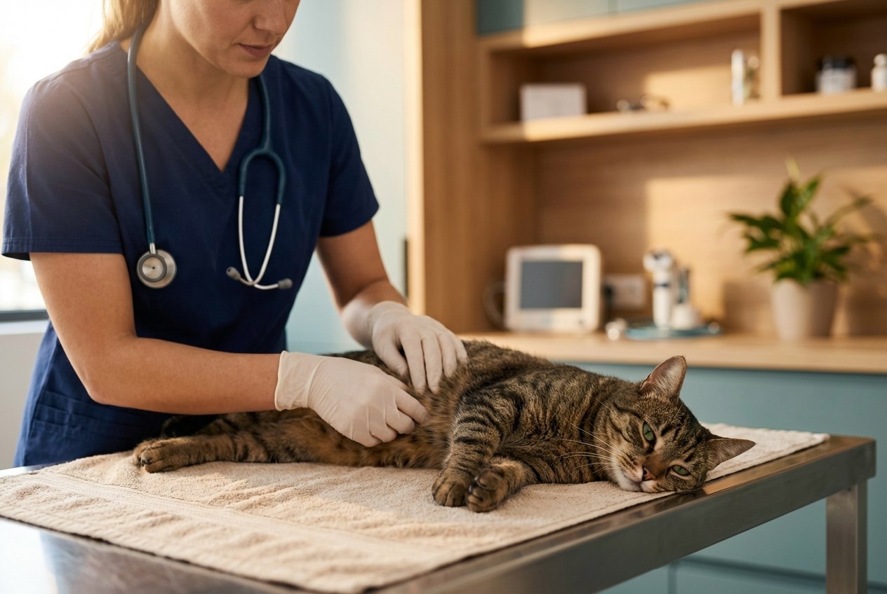
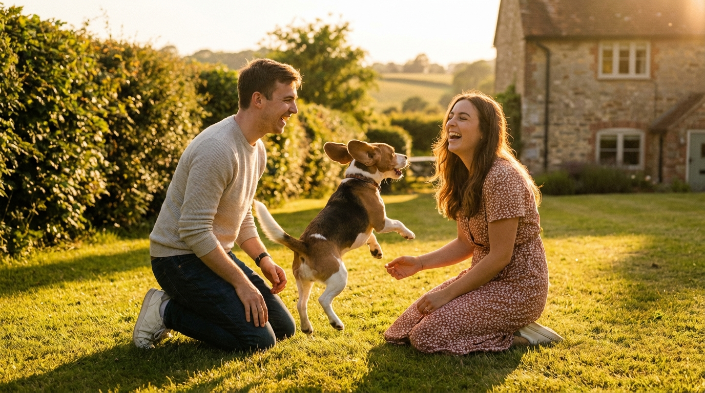

"What struck me about Halian was the very first visit. Melanie sat on the floor with our terrified rescue dog, just talking quietly to her, letting her approach in her own time. She didn't try to rush the examination. She said 'we'll work at Rosie's pace.' That told me everything I needed to know."
Independent. Bespoke.
Your Pet Deserves Individual Care.
Halian Veterinary Centre — founded and personally led by Dr Melanie Taylor since 2008. We keep our practice small so every pet gets the time and attention they deserve.
4.8 from 103+ reviews · In-house physiotherapy · Independent since 2008
The Problem
Your Pet Deserves More Than Ten Minutes and a Generic Prescription
You love your pet. They're family. So when you take them to the vet, you want to feel like they matter — not like they're appointment number 47 in a packed schedule.
Too many pet owners know the frustration: a rushed consultation where the vet barely looks up from the screen, a different face every visit, and the nagging feeling that something might have been missed because nobody took the time to look properly.
Your pet deserves a vet who knows them. Who remembers their history without being prompted. Who takes the time to investigate rather than just prescribe. Who treats them as an individual, not a case file.
"Will the vet remember my pet from last time?"
"Are they rushing through this consultation?"
"What if they miss something because they don't know my pet's normal behaviour?"
"Am I settling for less than my pet deserves?"
These worries are valid. And there is a better way.
What Makes Halian Different
Known, Not Numbered
Your pet walks into a practice where they're recognised. The vet knows their name, their history, their personality. You never have to explain everything from scratch.
Unhurried, Expert Care
Consultations take as long as they need. Your vet listens, investigates, and explains clearly. You leave every appointment feeling informed and confident.
Specialist Services on Your Doorstep
In-house physiotherapy, diploma-level surgical nursing, and comprehensive diagnostics — without being referred elsewhere. Complex needs handled here, by people who know your pet.
Your Guide
Meet the Team That Knows Your Pet by Name
We get it. You want a vet who genuinely cares — not just about animals in general, but about your animal specifically. You want someone who notices the small changes, takes the time to explain what they mean, and makes decisions based on what's best for your pet.
That's exactly why Dr Melanie Taylor founded Halian in 2008. She wanted to build a practice where every pet is truly known.

Specialist Expertise
Natasha
Qualified veterinary physiotherapist offering in-house rehabilitation, arthritis management, and mobility therapy. One of very few local practices with this capability.
Tracey Read RVN DipAVN(Surgical)
Diploma-level surgical nurse providing specialist post-operative care and monitoring.
Deliberately Small
We're not small because we can't grow — we're small because we choose to be. We limit our patient numbers so we never compromise on consultation time or quality of care. That's why we're currently operating a waiting list. Our existing clients come first, always.
4.8 Google Rating | 103+ Reviews
Independent Since 2008
In-House Veterinary Physiotherapy
Founder-Led Practice
What Our Clients Say
"We've been with Halian since Melanie first opened in 2008. She's seen our family through three dogs, two cats, and more than a few emergency visits over the years. She genuinely remembers them. We don't have to explain Hugo's anxiety every time — she knows."
"Our Labrador Bella had a cruciate ligament repair and was struggling with her recovery. When we switched to Halian, Natasha put together a proper physiotherapy programme. Within eight weeks, Bella was weight-bearing again. Within twelve, she was running."
"I took Monty in for what I thought was a minor stomach upset. Melanie wasn't satisfied with the initial presentation and ran further tests. She found a small growth that needed removing. Because she caught it early, the surgery was straightforward. Her thoroughness saved his life."
How It Works
How Halian Works
1
Tell Us About Your Pet
Call us on 01727 874700. We'll have a friendly conversation about your pet — their breed, age, health history, and any concerns you have. If we're currently full, we'll add you to our waiting list and keep you updated.
2
Your First Consultation
When a space opens, you'll meet with Dr Melanie or one of our small team for a thorough, unhurried assessment. We take the time to properly understand your pet — their temperament, their history, and what they need.
3
A Lifetime of Bespoke Care
From that first visit, your pet becomes part of the Halian family. Personalised care plans, consistent faces, specialist services when needed, and a team that genuinely knows your pet year after year.
Bespoke Veterinary Care, Under One Roof
Bespoke Consultations
Unhurried, personalised appointments where your vet takes the time to truly understand your pet.
Veterinary Physiotherapy
In-house physiotherapy with Natasha, our qualified veterinary physiotherapist. Post-operative rehabilitation, arthritis management, and pain relief.
Surgical & Post-Operative Care
Expert surgical capabilities backed by Tracey Read RVN DipAVN(Surgical), our diploma-qualified surgical nurse.
Wellness & Preventative Care
Comprehensive vaccination programmes, parasite control, dental care, and senior pet health monitoring.
Advanced Diagnostics
Thorough diagnostic workups when something isn't right. Blood work, imaging, and specialist analysis.
Senior Pet Care
Tailored senior wellness programmes with regular monitoring, mobility support, and compassionate end-of-life care.
What Your Pet Misses at an Impersonal Practice
At a large, busy practice, your pet is one of hundreds. Consultations are short. The vet changes every visit. Nobody notices the subtle weight loss, the slight change in gait, the quieter-than-usual behaviour that might signal something serious.
Rushed consultations miss things. A vet who doesn't know your pet can't spot the small changes that matter. Early warning signs go unnoticed. Minor conditions become major ones.
Lack of continuity costs you. Every visit feels like starting over. You repeat the same history. The vet reads the notes for the first time while your anxious pet sits on the table.
Your pet's anxiety grows. Animals sense when a practice is rushed and impersonal. They become more stressed with each visit.
Don't let your pet become just another number.
What Life Looks Like with the Right Vet
When you join Halian, something changes. Vet visits stop being stressful and start being reassuring. Your pet has a team that knows them, and you have the confidence that comes from genuine expertise and individual attention.

Known, Not Numbered
Your pet is genuinely known. The vet knows their name, history, and personality.
Unhurried, Expert Care
Consultations take as long as they need. You leave feeling informed and confident.
Specialist Services on Your Doorstep
Physiotherapy, surgical nursing, diagnostics — all under one roof.
A Relationship That Lasts
Many of our families have been with us since 2008. We see puppies grow into seniors.
Peace of Mind
You know your pet is in the best hands. Deliberately small, deliberately personal.
Community, Not Corporate
Independent, founder-led, and rooted in Frogmore. Your fees support a local practice.
Choose Halian, and your pet doesn't just get a vet. They get a team that knows their name, their history, and their quirks.
Your Pet Deserves a Vet Who Knows Them
Halian Veterinary Centre is founder-led, deliberately small, and committed to bespoke care for every animal we see. From routine wellness to specialist physiotherapy, we're here for the lifetime of your pet.
Call us: 01727 874700
Due to high demand, we're currently operating a waiting list for new registrations.
Already Registered? Call 01727 874700 to book your pet's next consultation.